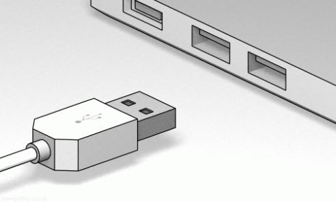

Ще 18 років тому підключити якийсь екзотичний гаджет до свого комп’ютера було цілою проблемою. Тоді як сьогодні це досить просто завдяки технології універсальної шини підключення – Universal Serial Bus, USB. Вона продовжує розвиватись і найближчими роками позбудеться однієї з головних своїх незручностей – периферію можна буде встромляти в роз’єми будь-якою стороною. Окрім цього, USB стане ще швидшим і від цього – більш універсальним. Спробуємо розібратися, на заміну яким роз’ємам прийшов цей формат підключення та які намагалися його замінити.
Історія формату USB почалася в 1994 році зусиллями компаній Intel, Microsoft, Philips та US Robotics. Вони намагалися створити такий інтерфейс, який би був зручним для користувача та дозволяв підключати велике розмаїття гаджетів. Останні підключалися через порти PS/2, Apple Desktop Bus, роз’єм DIN, COM-порт, LPT-порт, порт для підключення джойстика, SCSI та багато інших.
Так виглядають паралельний LPT-порт та послідовний COM-порт
Окрім великої кількості несумісних стандартів, користувачі для під’єднання чергової периферії часто змушені були купувати спеціалізовані плати розширення, оскільки комп’ютери мали обмежений набір портів. Наприкінці 90-х у продажу почали з’являтися перші ПК з вбудованим USB. Зазвичай вони розміщувалися на задній стінці та підтримували стандарт USB 1.1, який забезпечував швидкість обміну до 12 Мбіт/сек. Спочатку пристроїв з підтримкою USB було настільки мало, що іноді її навіть називали Useless Serial Bus – непотрібна послідовна шина замість правильної назви універсальна шина. Однак виробники швидко зрозуміли переваги нового стандарту, і вже на початку нульових років більшість принтерів та сканерів підключалися саме по USB. Саме тоді з’явився стандарт USB 2.0, який позбувся багатьох проблем, наприклад, дуже низької швидкості пересилання. Завдяки цьому можна було створювати переносні флеш-накопичувачі та жорсткі диски. Виявилося, що такі носії зручніші за дискети, поширені формати яких або мали невеликий обсяг, або це були ємні приватні формати. USB-накопичувачі навіть змогли замінити оптичні носії.
Одна з головних незручностей USB – складність підключення, без візуального погляду на роз'єм. Її подолають у USB Type C, проте цей конектор буде несумісним з наявними Type A та Type B
Цей формат підключення також виявився зручним для під’єднання будь-якої периферії: адаптерів Wi-Fi, мережевого порту Ethernet, оптичних зчитувачів. Завдяки швидкості пересилання в 480 Мбіт/с ці та інші гаджети можна було робити знімними, тоді як без USB вони вбудовувалися всередині ПК. Сьогодні більшість гаджетів USB виконані саме з підтримкою стандарту USB 2.0. Проте на заміну йому вже йде USB 3.0, який забезпечує швидкість пересилання до 5 ГБіт/с. Завдяки цьому зручно переміщувати великі файли або навіть запускати операційну систему зі знімних накопичувачів. Універсальність та швидкість – це одна з причин, чому в багатьох сучасних ноутбуках серед портів розширення є лише USB. Наприклад, чипсети від Intel підтримують до 14 портів USB на кожний комп’ютер – це в сім разів більше, ніж було на перших ПК.
USB сьогодні настільки поширений, що його навіть вбудовують у розетки
Формат USB має власні проблеми, проте йому вдалося отримати надзвичайно широку популярність, і базовий роз’єм Type-A залишався без змін майже 20 років. Увесь цей час на ринку з’являлися альтернативи, які мали на меті стати заміною технології універсальної шини підключення. У локальних масштабах вони були досить успішними, проте в глобальному плані вони популярними не стали. Одним з таких портів був FireWire, який ще називався IEEE 1394. Це стандарт, головним розробником якого була Apple та який розвивався з кінця 90-х по 2010-і роки. Він мав декілька переваг над USB, наприклад, можна було під’єднувати послідовно декілька гаджетів в один порт. Робота з периферією FireWire не вимагала потужного процесора, оскільки вона мала власні контролери. Окрім цього, вона передавала дані в режимі дуплексу – у двох напрямах одночасно – від ПК до периферії та навпаки. Стандарти USB 1.1 та 2.0 працюють лише в напівдуплексі – в одиницю часу дані пересилають лише в одну сторону. Завдяки дуплексу FireWire 400 підтримував швидкості до 400 Мбіт/с, тоді як популярний у той час USB 1.1 забезпечував лише 12 Мбіт/с. Коли з’явився USB 2.0 зі швидкістю 480 Мбіт/с, FireWire опанував 800 Мбіт/с.
FireWire 400 та FireWire 800 поряд з роз'ємом USB
Однак усі переваги FireWire перекривалися дорожнечею його розгортання саме через наявність власних контролерів не лише в ПК, але й в периферії. Окрім цього, виробники продукції з підтримкою цього стандарту змушені були платити Apple ліцензійні відрахування. Заходу популярності FireWire сприяло також те, що перехід від FireWire 400 до FireWire 800 вимагав зміни обладнання через несумісність. Тоді як USB 1.0, 1.1, 2.0 та 3.0 повністю сумісні між собою. Через свою високу швидкість пересилання FireWire став популярним у топовому відеообладнанні та системах зберігання даних. Ще одним конкурентом USB є Thunderbolt, який вже стикнувся з тими ж проблемами поширення, що і FireWire, хоча і мав замінити останній. Технологія Thunderbolt сьогодні переважно асоціюється з комп’ютерами Apple Mac, оскільки вона вперше з’явилася саме в них. Однак цей стандарт розробили в Intel, і спочатку він називався Light Peak.
Thunderbolt має високу швидкість пересилання – до 10 Гбіт/с, вдвічі більшу за USB 3.0. При цьому цей стандарт з’явився на ринку за декілька років до того, як USB 3.0 став поширеним. Розвиток Thunderbolt продовжується, і його друге покоління забезпечує пересилання на рівні 20 Гбіт/с. При цьому і в лабораторіях йде розробка наступної версії з підтримкою швидкостей до 40 Гбіт/с, а в планах – подолати позначку 100 Гбіт/с. Останнє змусить виробників перейти від мідних проводів до оптичного з’єднання. Однак те, що Thunderbolt вимагає спеціалізованих контролерів не лише в ПК, але й в периферії, значно піднімає вартість гаджетів з ним. Intel могла би скористатися своїм монопольним положенням на ринку та впровадити цей стандарт у свої чіпсети. Так само вона колись зробила з Wi-Fi, який перетворився з дорогої технології на поширене рішення для бездротових мереж. Однак це означає ускладнення мікросхем, за яке потрібно платити зменшенням прибутків або піднімати на них ціни.
Як і FireWire, Thunderbolt вимагає дорогої електроніки навіть у кабелі. У USB кабель – це просто мідні дроти з конекторами на кінцях
Експерти прогнозують, що головними конкурентами на заміну USB можуть також стати бездротові технології. Такі рішення, як Bluetooth, NFC, Wi-Fi Direct та AirDrop, спрощують обмін даними і при цьому не вимагають під’єднання якихось роз’ємів. Наприклад, Miracast та AirPlay дозволяють без дротів передавати контент на телевізор. А з Wi-Fi можна друкувати на сумісних принтерах. Основна проблема бездротових технологій – швидкість, адже навіть USB 2.0 виявляється швидшим та надійнішим. Окрім цього, не варто забувати і про зарядку – підключення дротом дозволяє не лише пересилати дані, але й поповнювати енергію акумулятора. Поки бездротові зарядки не стануть масовими, це буде ще одним фактором, який робитиме USB популярним ще довгий час.